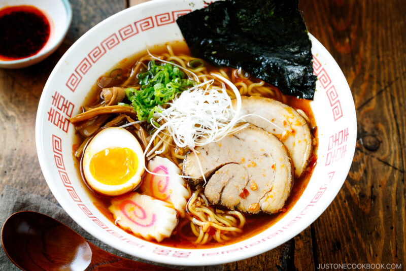
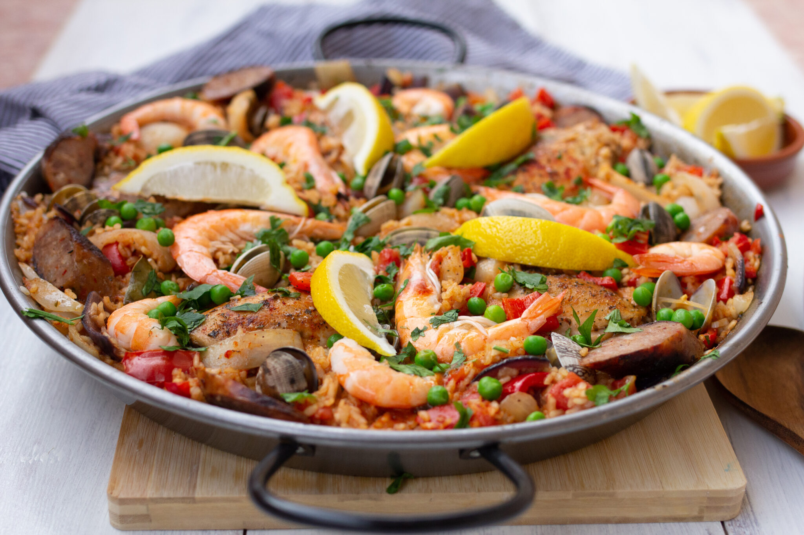
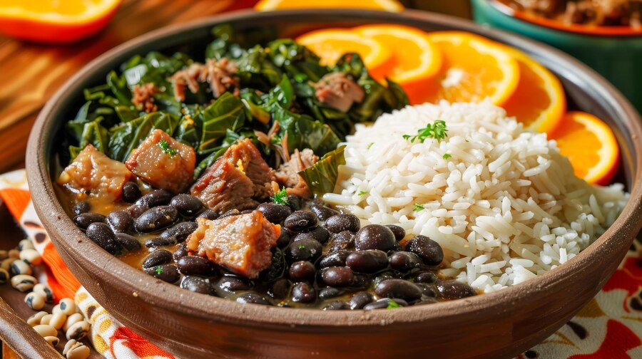

Food Around the World
Food connects cultures and brings people together. Here are some popular dishes from different continents.
Asia
- Sushi

- Ramen
 - Dim Sum

Europe
- Pizza

- Croissant

- Paella

America
- Burger

- Tacos

- Feijoada

Food connects cultures and brings people together. Here are some popular dishes from different continents.